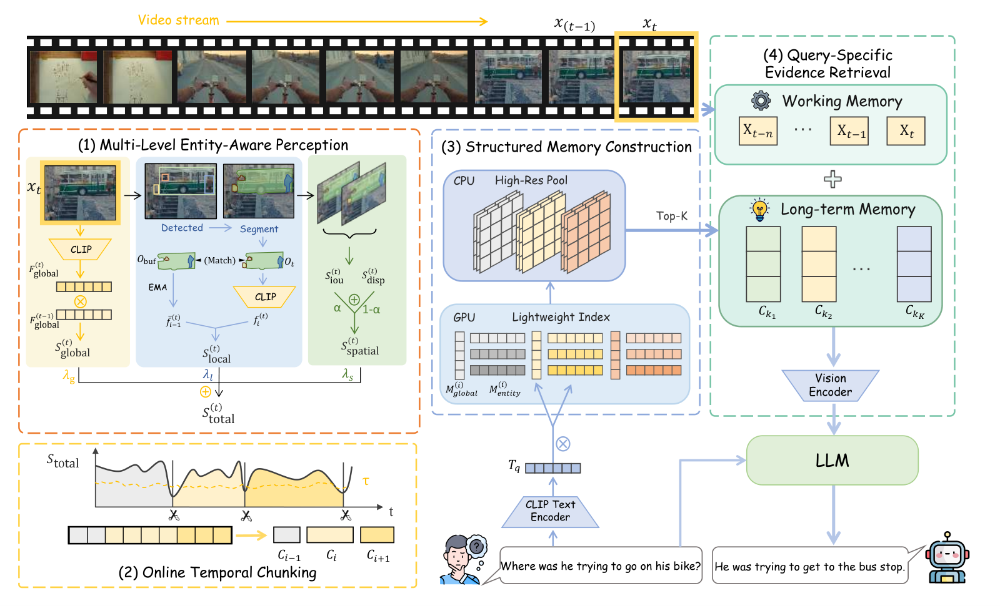

Paper Analysis
01 · The Unit of Memory Is a Video Chunk
视频问答有两个不同瓶颈：历史太长，不能全部送给模型；历史压缩后，又可能丢掉回答细节。MEMO 的选择是保留原始证据，但给它建立更细的检索目录。这里的 entity 是检测并短期关联的对象，chunk 是连续且内容相对一致的视频片段，index 是用来找片段的语义向量。
严格 online 指回答时只使用当前及过去帧，没有未来视频。它并不意味着每帧都完成语言生成，也不意味着所有存储量固定。主实验输入以 1 fps 采样；问题出现后才调用 MLLM 对选中的画面进行回答。
需要区分三种内容：CLIP 负责可匹配的语义索引，原始帧保留细节，MLLM 的视觉编码器负责把被选中的证据转换成回答所需表示。CLIP 向量不是原始图像的无损摘要，因此作者没有要求它独自承担细节推理。
Paper Analysis
02 · Following the Original Pipeline

Yinying Li et al. · Original figure, unmodified · CC BY 4.0 · Paper & Caption ↗
Figure 2 左侧先对整帧提取 CLIP 特征，同时由 Grounding DINO 检测、SAM 分割对象；掩码抑制背景后，再为对象提取 CLIP 特征。跨帧匹配让相邻观测共享短期身份，避免每张图都重新建立互不相关的区域。
左下角将全局、局部和空间连续性组合成一个分数。分数显著下降时结束当前片段。中间为该片段建立一个全局向量和一组实体向量，而高分辨率帧保存在 CPU。右侧用问题的 CLIP 文本向量查询历史片段，把命中的证据与尚未结束的当前片段一起送入视觉编码器和 LLM。
默认检索三个历史片段。历史证据合计最多采样八帧，当前活动片段最多八帧，总视觉输入上限十六帧；不是每个历史片段各给八帧。已被编码过的证据可以缓存 MLLM 视觉表示，供后续问题复用。
因此语义的作用有两处明确的前向路径：改变何时切片段，以及改变哪些片段被读出。它不是训练损失，也没有梯度去改善图像编码器或重建几何。
Paper Analysis
03 · How an Object Changes a Boundary Decision
全局连续性是相邻帧 CLIP 余弦相似度映射到 [0,1]。局部连续性则把当前对象特征与此前的 EMA 状态比较，再按对象在画面中的面积比例加权。EMA 是指数移动平均：本次取 0.3，过去取 0.7，目的在于减轻单帧外观抖动。比较必须用更新前的历史状态，否则会人为提高自相似度。
对象集合发生变化时还要扣分。新出现对象的惩罚更强；消失对象先进入 hidden 状态，其惩罚随消失时长按 min(c/5,1)² 增长。这样一次遮挡不必立刻解释成事件切换。这里的身份来自短期关联，默认 IoU 阈值 0.3，不能等同于跨天可靠的实例识别。
空间项由掩码 IoU 和框中心位移连续性构成，权重分别为 0.6、0.4。它是二维图像上的运动线索，不是三维几何一致性；相机运动本身也会改变它。没有对象成功匹配时，两项置零。
总分按空间 0.35、局部 0.45、全局 0.20 混合。最近三十个分数的均值减去 1.3 倍标准差，截断到 [0.1,0.9]，得到边界阈值。论文一般形式允许连续多次低分确认，但主实验 N_confirm=1，最短片段四帧，所以不能把“多帧确认抗抖”写成默认实际运行行为。
教学例子：若近期均值 0.8、标准差 0.1，则阈值为 0.67。当前总分 0.6 且片段已满足最短长度时会触发切分。这个规则衡量相对变化，不代表 0.6 是经过标定的事件边界概率。
f_bar_i(t) = 0.3 f_i(t) + 0.7 f_bar_i(t-1) S_total = 0.35 S_spatial + 0.45 S_local + 0.20 S_global tau = clip(mean_recent - 1.3 * std_recent, 0.1, 0.9) Cut when S_total < tau and the minimum-length condition holds.
Paper Analysis
04 · Writing Indices and Reading Evidence
片段全局索引不是简单取最后一帧。作者加权聚合帧特征并归一化，相邻变化较大的帧权重更高，第一帧权重设为一。实体索引保存片段结束时仍活跃对象的 EMA 向量；隐藏计数超过最大预算一半的实体不保留在该索引。
给定问题向量 q，每个片段计算全局相似度，以及所有实体中最大的相似度。默认以 0.6 和 0.4 混合排序。局部最大值让一个相关小对象有机会把整个片段召回，即便它在整帧特征中被背景稀释；但最大值本身并不能验证多个对象关系或完整事件顺序。
索引找到的是候选证据，不是答案。真正的细节仍需回到高分辨率帧，让 MLLM 看图。对于“没有出现过某物”之类问题，单个正向实体匹配尤其不足，作者也将隐含状态和缺失状态列为局限。
每个片段索引规模约为 D+N_obj×D，不等于整条视频的存储是常数。片段数量、CPU 原始帧以及后续视觉缓存都可能随历史增长。论文的 GPU-only 变体达到预算后丢弃旧证据，混合后端则主要通过转移存储位置降低显存压力。
score(q, C_i) = 0.6 cos(q, M_global_i)
+ 0.4 max_e cos(q, e), e in M_entity_i
Retrieve top 3 chunks; sample <=8 historical + <=8 current frames.Paper Analysis
05 · Which Results Support the Design?
主实验是 OVO-Bench 和 StreamingBench 的 real-time 子集，指标越高越好。下表列同骨干前后变化。Qwen3-VL-8B 在两个数据集分别提高 5.9 和 10.5 个百分点；这里是百分点，不是相对百分比。0.5B 模型在 StreamingBench 略降，说明提供更好的候选证据不保证较弱模型能利用。
Qwen3-VL-8B 的组件消融为：基础 73.2，仅 memory 79.4，仅 perception 77.8，完整 83.7。移除 perception 将动态切分改成固定长度；移除 memory 则以相同视觉预算作时间顺序截断。这些对照支持组织与读取历史的价值，但不能拆成独立、可相加的因果贡献。
更贴近检索机制的对照是最近 K 片段 82.32、随机 K 片段 81.73，完整约 83.7。语义检索比时间先验有额外收益，但 10.5 点整体提升不能都算给 CLIP 检索。Entity-only 为 81.77、Global-only 为 81.31；这两组同时改了切分与检索，不能只归因于读取阶段。
跨方法比较要注意输入差异：ReKV、LiveVLM 等行使用 0.5 fps，MEMO 为 1 fps。Qwen2.5-VL 上 FluxMem 的 OVO 为 67.2，高于 MEMO 的 66.9；不要把最佳大骨干结果概括成每个骨干、每个基准全面获胜。
| Backbone | OVO Base | OVO MEMO | Streaming Base | Streaming MEMO |
|---|---|---|---|---|
| LLaVA-OV-0.5B | 49.7 | 50.4 | 59.6 | 59.5 |
| LLaVA-OV-7B | 63.1 | 66.6 | 71.1 | 73.2 |
| Qwen2.5-VL-7B | 59.9 | 66.9 | 73.3 | 78.5 |
| Qwen3-VL-8B | 70.1 | 76.0 | 73.2 | 83.7 |
Paper Analysis
06 · Cost and Relevance to Reconstruction Memory
无需训练不等于计算便宜。A6000 上 CLIP、Grounding DINO、SAM 合计 297.60 ms/采样帧，memory 更新 0.39 ms/帧，检索与召回 8.08 ms/问题。开销主要在感知模块；1 fps 设置可承受，不应直接外推到原始高帧率视频。
Figure 3 报 Qwen2.5-VL+MEMO 峰值显存 21.1 GB、问答响应 1.2 秒。Table 3 又报 Total Gen. 1367.62 ms；两处计时口径或汇总差异未充分解释，不宜将这些数拼成精确端到端吞吐。问答延迟也不包含此前整段视频持续累积的所有感知成本。
官方仓库提供四类骨干、两项基准的配置和运行入口，但文档说明发布版本未完成全部 benchmark 重跑。本次阅读核对论文与仓库说明，没有复现实验。
对 LingBot-Map 的启发是让语义参与“保存边界”和“历史寻址”，并保留几何所需的原始证据。它不能直接验证写入前融合的可学习 memory：本文没有未来帧几何 loss，也不是同总容量的压缩历史实验。迁移时应把索引、视觉证据、缓存和额外感知计算全部计入预算，再测几何精度与完整度。
Discussion
Reading Questions
Is MEMO a fixed-capacity memory?
不是。最终模型输入有十六帧上限，但历史索引和 CPU 视觉证据会增长；每片段索引小不代表总存储固定。
Does semantics affect both writes and reads?
是。实体与全局特征影响片段边界和索引形成，也影响问题检索；这些是固定规则与预训练特征，不是端到端学习的写入策略。
Does the paper demonstrate better geometry?
没有。指标是视频理解问答，空间项也只是二维掩码和位移连续性。
What is the closest retrieval control?
最近 K 片段为 82.32，完整约 83.7；整体相对基础模型的 10.5 点还包含切分、证据组织等变化。
References
- Paper · Read Version ↗
- Submission History ↗
- Figure License · CC BY 4.0 ↗
- Official Repository ↗
- Official Project ↗
Original Figure 2 is reproduced without modification under CC BY 4.0. First submitted September 30, 2026; read version v2, October 9, 2026. Paper results are reported, not independently reproduced. The code license is separate from the paper-figure license.
Verified on 2026-10-26. Paper results refer to the linked versions. Repository references were checked on this date.